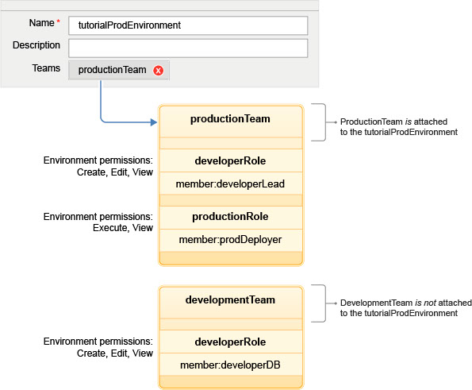

Managing Security
IBM DevOps Deploy (Deploy) uses a flexible team-based and role-based security model that maps to your organizational structure.
From a high level, the security system for the server consists of an authentication realm, authorization realm, roles, and teams. The authentication realm verifies the identity of the user or system that is trying to log on to the Deploy server. The authorization realm manages user groups. Roles manage permissions. Teams join users with roles and specify which objects the team can access.
Permissions
Deploy uses the term permission in a way that is familiar to most readers: each permission controls access to a product area or product function. Most permissions refer to typical activities such as creating, reading, updating, and deleting. Separate permissions are available for each type of object on the server, including components, applications, and environments. Permissions define what can be done, not who can do it.
Within each security type, you specify the permissions that each role has. For example, administrator or team lead roles have many permissions, while observer roles have limited permissions.
Security types
Security types divide one type of object into categories. For example, you can set one security type for production environments and a separate security type for development environments for the same object type. Then, you can set different permissions for each type of environment. Security types are optional; you can define security types or use the default security type for all objects.Roles
A role is a set of granted permissions. A developer-type role might have permissions for creating applications but not running them in production environments. Alternatively, a deployer-type role might be able to run applications but not create them. You decide the number of roles and their functions. By default, Deploy provides several roles. The administrator role, for example, is granted permissions for all security types. You must create your own roles and specify the permissions for each role.
When you create a role, that role becomes available on each team. Then, you can assign users to that role for a specific team.
Teams
A team is a construct that associates users or groups with roles. When a user is added to a team, that person is assigned to one or more roles. Users cannot be added to a team unless they have a role assignment. Role members are granted all permissions that are defined for the role. Groups can also be added to roles, in which case all group members are granted the permissions that are defined for the role.
Teams secure resources. To secure an environment, for example, assign a team to it. After the environment is secured, only team members who are assigned a role with an appropriate permission can affect the environment.
The System Team that comes with Deploy has several users, such as the admin user which is assigned to the Administrator role. The Administrator role has all permissions that are granted for all standard security types and for the server and web UI settings. The System Team cannot be deleted.
The System Team has access to everything on the server according to the permissions in the standard security type. For example, the members of the System Team have the environment permissions that are listed in the Standard Environment security type for all environments.
Resource and object security
To give team users access to a resource or object (such as a component, application, or environment), assign that resource or object to a team. In the following figure, the productionTeam team is attached to the tutorialProdEnvironment environment. The productionRole role has the execute permission for environments. Team members with that role, such as prodDeployer, can run applications in the environment. Team members without that role, such as developerLead, cannot run applications even though the team is attached to the environment.

The developerLead user can create and modify environments. Additionally, the developerDB user can create environments even though the developmentTeam team is not attached to this or any other environment.
When a team is assigned to an object, the security type is also determined. By varying security types, you can fine-tune team permissions. For example, a team might have one set of permissions for a component and, by changing the security type, another set for a different component.